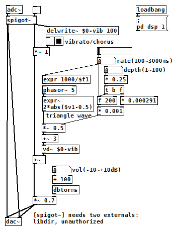

ビブラート/コーラス（Pure Data パッチ）
2017年10月12日 カテゴリー：Pure Data
ディレイの時には[delread~]からディレイ音を出力させましたが、ディレイタイムを連続的に変化させる場合は、[vd~](variable delay)を使います。LFOで周期的にディレイタイムを変化させると、ディレイ音の音程が揺れてビブラートがかかり、原音とビブラート音を足せばコーラスとなります。
（このパッチをダウンロード）
LFOの出力はトレモロの時と同じ三角波ですが、abs関数を使うと簡単になると気づいて式を変更しました。出力範囲は0～1で、[*~ ]により振幅が調整されます。[+~ 3]を入れているのは、[vd~]の最短ディレイタイムが64サンプル分（44100サンプリング時1.5ms）となっているためで、一応余裕をみて3ms足しています。
ビブラート音をフィードバックさせればフランジャーとなりますが、いまいち数値の調整がうまくいきませんでした。今後使いたくなったときに作るかもしれません。
【depth計算について】
通常のコーラスエフェクターは、揺れのスピードを遅くすると効きが浅くなります。今回のdepthコントロールでは音程を変える幅が設定され（いわゆるデチューン機能）、rateを変更しても効果が変わらないようにしました。具体的には、最大で約25centピッチが変化するように調整しています。
詳しい原理は省くとして、例えば1000Hzの信号に可変ディレイをかけるとします。1秒間かけて徐々にディレイタイムを0から100msに変化させたとき、ディレイ音は100Hzズレて900Hzの音になります。同様に、0.5秒間かけてディレイタイムを0から25msへ変化させたとき、ディレイ音は50Hzズレて950Hzとなります。このように、比例計算によって周波数の変化幅を調節できます。